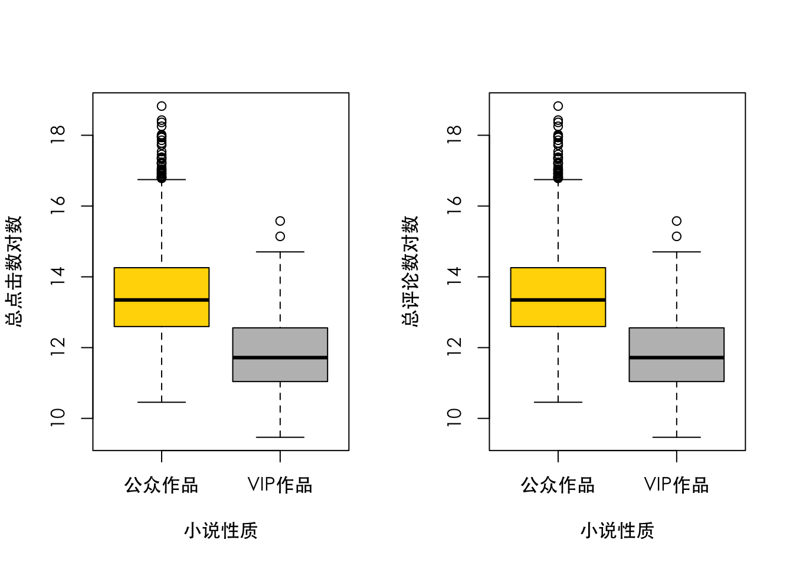
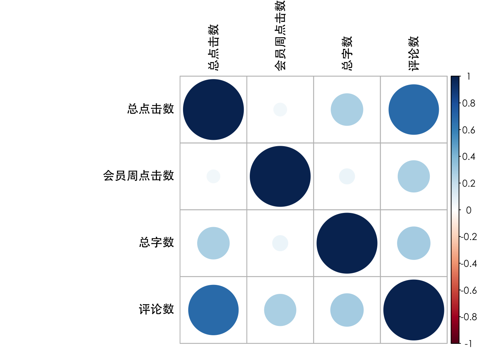
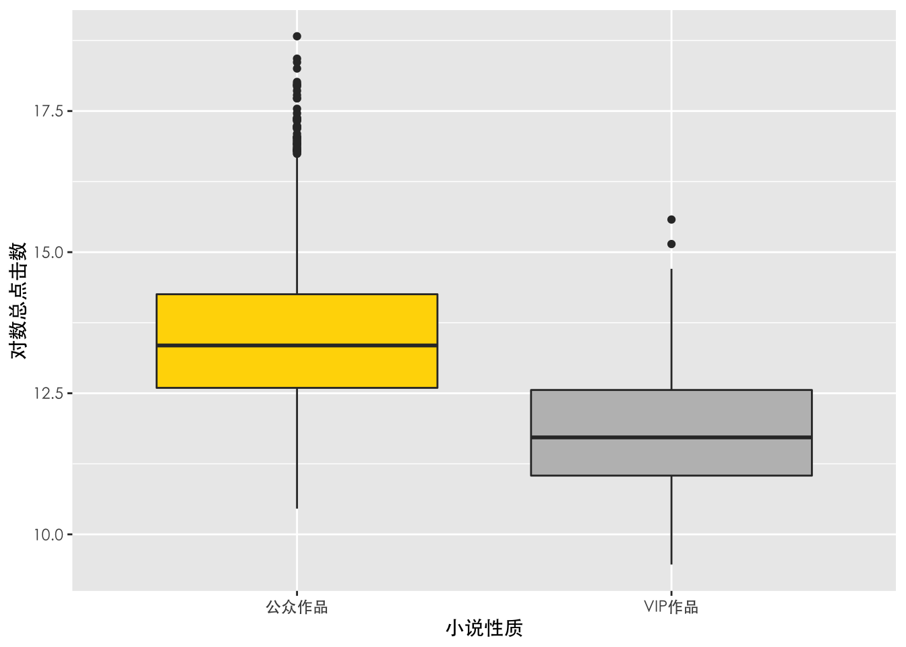

第4章：描述分析
案例引入
近年来，网络小说市场正在逐渐膨胀。据相关数据表明，到2020年，我国网络文学市场规模达到120亿元，网络文学用户规模达到3.33亿，移动阅读用户规模达到3.04亿。网络小说市场迎来了前所未有的发展机遇。
以网络小说作者天蚕土豆的作品《斗破苍穹》以及忘语的《凡人修仙传》等为首的一系列网络小说，近些年来尤为火爆，它们在某平台上的点击量直破1亿大关。究竟有哪些因素使得这些小说如此之受欢迎？本章使用一个网络小说数据集作为案例进行简单的描述分析，来探究这一问题。
本章使用一个网络小说数据集作为案例数据集。该数据集收集了1549部排名较高的网络小说信息，其中包含《斗破苍穹》、《凡人修仙传》等多部热门小说的类型介绍、点击数、评分等信息。数据变量说明表如下所示：
| 变量类型 | 变量名 | 详细说明 | 取值范围 |
|---|---|---|---|
| 因变量 | 总点击数 | 定量，单位：次 | 12920-149800000 |
| 自变量 | 小说信息 | 小说名称 | 定性 |
| 作者 | 定性 | ||
| 小说类型 | 定性，13个水平 | ||
| 总字数 | 定量，单位：个 | ||
| 小说性质 | 定性，2个水平 | ||
| 写作进程 | 定性，11个水平 | ||
| 授权状态 | 定性，8个水平 | ||
| 更新时间 | 单位：年／月／日／时／分 | ||
| 内容简介 | 定性，1549个水平 | ||
| 会员评价 | 评分 | 定量，单位：分 | |
| 会员周点击数 | 定量，单位：次 | ||
| 评论数 | 定量，单位：个 |
这里我们关心的核心指标是小说点击数，它对于小说而言至关重要，代表了一部小说的热度。在所收集的小说数据集中，最大值《斗破苍穹》的点击数接近1.5亿，而最小值《鸣的大冒险》仅有不到1.3万，可谓差距悬殊。那么，如何分析哪些因素与小说点击数息息相关？想要探索这个问题的答案，需要对数据进行描述分析。
### 数据准备 ###
# 清空工作空间
rm(list = ls())
# 载入相关包及设定路径
library(plyr)
library(dplyr)
library(stringr)
library(tidyr)
library(corrplot)
library(ggplot2)
library(zoo)
library(reshape2)
library(plotly)
Sys.setlocale("LC_ALL", "zh_cn.utf-8")## [1] "zh_cn.utf-8/zh_cn.utf-8/zh_cn.utf-8/C/zh_cn.utf-8/en_US.UTF-8"# 读入数据
novel = read.csv('./data/novel.csv', fileEncoding = "UTF-8")
# 数据查看与异常处理
head(novel)## 人气排序 小说名称 作者 小说类型 总点击数 会员周点击数 总字数 评论数
## 1 1 一念永恒 耳根 仙侠小说 4383898 10691 1155534 435429
## 2 2 斗战狂潮 骷髅精灵 仙侠小说 1678379 36587 422116 23159
## 3 3 天影 萧鼎 仙侠小说 1248708 32019 373763 25253
## 4 4 不朽凡人 鹅是老五 仙侠小说 2457382 9610 995669 146715
## 5 5 玄界之门 忘语 仙侠小说 3736897 6709 1784999 238113
## 6 6 龙王传说 唐家三少 玄幻小说 2968846 3080 1552654 293934
## 评分 小说性质 写作进程 授权状态 更新时间
## 1 9.8 公众作品 连载中 Ａ级签约 2016/10/23 11:50
## 2 10.0 公众作品 连载中 Ａ级签约 2016/10/22 17:05
## 3 9.8 公众作品 连载中 Ａ级签约 2016/10/23 10:40
## 4 9.9 公众作品 连载中 Ａ级签约 2016/10/22 20:50
## 5 9.8 公众作品 新书上传 Ａ级签约 2016/10/23 10:15
## 6 9.8 公众作品 新书上传 Ａ级签约 2016/10/23 7:00
## 内容简介
## 1 一念成沧海，一念化桑田。一念斩千魔，一念诛万仙。??? 唯我念……永恒??? 这是耳根继《仙逆》《求魔》《我欲封天》后，创作的第四部长篇小说《一念永恒》
## 2 双月当空，无限可能的英魂世界 \n??? 孤寂黑暗，神秘古怪的嬉命小丑 \n??? 百城联邦，三大帝国，异族横行，魂兽霸幽 \n??? 这是一个英雄辈出的年代，人类卧薪尝胆重掌地球主权，孕育着进军高纬度的野望！ \n??? 重点是……二年级的废柴学长王同学，如何使用嬉命轮盘，撬动整个世界，学妹们，请注意，学长来了！！！ \n??? 斗战一群：21222419（两千人战力群）\n??? 斗战二群：12962047 \n??? 骷髅的微信公共号：kuloujingling00 \n??? 新浪微博：骷髅精灵
## 3 阴阳分天地，五行定乾坤。\n??? 天穹之下岁月沧桑的中土神州，正是仙道昌盛的时代，亿万生灵欣欣向荣。\n??? 纵横千万里间，总有人间一幕幕悲欢离合，在恢弘长生的仙道中上演着。\n??? 有光便有暗，天穹之下光辉之中，仍有沉默的影子悄然前行着……\n??? 新书上线！精彩万分！请各位书友多多投票支持！另外，大家可以添加微信公众号zhuxianxiaoding（诛仙萧鼎），QQ官方群 176378308 进行交流。
## 4 在这里，拥有灵根才能修仙，所有凡根注定只是凡人。\n??? 莫无忌，只有凡根，一介凡人！\n??? 是就此老去，还是不甘？???
## 5 天降神物！异血附体！??? 群仙惊惧！万魔退避！??? 一名从东洲大陆走出的少年。??? 一具生死相依的红粉骷髅。??? 一个立志成为至强者的故事。??? 一段叱咤星河，大闹三界的传说。??? 忘语新书，已完本《凡人修仙传》》《魔天记》。
## 6 伴随着魂导科技的进步，斗罗大陆上的人类征服了海洋，又发现了两片大陆。魂兽也随着人类魂师的猎杀无度走向灭亡，沉睡无数年的魂兽之王在星斗大森林最后的净土苏醒，它要带领仅存的族人，向人类复仇！\n??? 唐舞麟立志要成为一名强大的魂师，可当武魂觉醒时，苏醒的，却是……\n??? 旷世之才，龙王之争，我们的龙王传说，将由此开始。\n???4.1 统计表格
4.1.1 变量说明表
对于定性变量，列示其主要水平及对应频数；对于定量变量，关注其取值范围、最大值、最小值、中位数等描述性统计量。这些变量描述指标在R语言中可以通过summary()函数直接获取。
# 对小说数据的若干列使用summary()函数
summary(novel[, 2:4])## 小说名称 作者 小说类型
## Length:1549 Length:1549 Length:1549
## Class :character Class :character Class :character
## Mode :character Mode :character Mode :character4.1.2 分组汇总统计表格
分组统计表格按照各个类别进行汇总，描述类别内部各个变量的特征。通过这种方式，可以比较各个类别之间的差异，输出所关心的汇总报表。
# 利用group_by()函数对小说按照小说类型分类
novel.小说类型 = novel %>% group_by(小说类型)
# 制作分组统计表
novel.小说类型 %>% summarise(平均评分 = mean(评分), 最大评论数 = max(评论数))## # A tibble: 13 x 3
## 小说类型 平均评分 最大评论数
## <chr> <dbl> <int>
## 1 都市小说 9.13 183799
## 2 二次元小说 8.22 23428
## 3 军事小说 9.38 92845
## 4 科幻小说 8.93 369417
## 5 历史小说 9.01 222505
## 6 灵异小说 9.1 17602
## 7 奇幻小说 9.02 231883
## 8 体育小说 9.33 27316
## 9 武侠小说 8.13 196111
## 10 仙侠小说 8.95 604560
## 11 玄幻小说 9.12 569756
## 12 游戏小说 9.22 237676
## 13 职场小说 8.73 3983074.2 数据可视化基础
统计表格是使用表格的形式展示汇总的统计指标，但从直观性而言，使用统计图形则更为合适。基本统计图形包括柱状图、饼图、箱线图、散点图、折线图和直方图。
4.2.2 柱状图
柱状图（barplot）是用柱子高低来表示取值大小的一种统计图形。常见的柱状图有频数柱状图及均值柱状图。频数柱状图展示的是定性变量各水平的频数统计，柱子高度代表每个水平频数大小。
# 统计小说类型频数
a=table(novel$小说类型)
# 对频数排序
a=a[order(a,decreasing = T)]
# 绘制柱状图
par(family = "STXihei",las = 2)
barplot(a[1:5],names.arg = names(a)[1:5],family="STXihei",ylab = "频数",xlab="",col = c("gold","grey","grey","grey","grey"))
title("各类型小说频数分布柱状图",family="STXihei")

柱状图并不仅用于展现频数，也可以展示按照分组划分后各类别的均值等指标。这种柱状图称为均值柱状图。
# 求得各类型小说平均点击数的均值
means<-novel%>%
group_by(小说类型)%>%
summarise(mean = mean(总点击数/10000))%>%
arrange(desc(mean))
par(family = "STXihei",las = 2)
# 绘制均值柱状图
barplot(means$mean[1:5], names.arg=means$小说类型[1:5],family="STXihei",ylab = "总点击数(万次)",xlab="",col = c("gold","grey","grey","grey","grey"))
title("各类型小说平均总点击数",family="STXihei")options(scipen = 200)
对两个或多个定性变量绘制柱状图可使用分组柱状图或堆积柱状图来展现。
# 构建绘图所需数据矩阵d
d = novel%>%group_by(小说类型, 小说性质)%>%
summarise(count=n())%>%
spread(小说性质,count)%>%
select(-V1)%>%
arrange(desc(公众作品))
topics = d$小说类型[1:5]
artwork_type = colnames(d)[2:3]
# 选取前五类小说
d = matrix(as.numeric(t(d[1:5,])[-1,]),nrow=2)
# 对列命名
colnames(d) = topics
# 对行命名
rownames(d) = artwork_type
# 绘制分组柱状图(beside = T)
par(mfrow=c(1,2), family = "STXihei",las=2)
barplot(d, beside = T, col = c("gold","grey"), ylab = "频数", ylim = c(0,500))
# 添加图例
legend("topright", legend = rownames(d), fill = c("gold","grey"), cex = 0.8)
# 绘制堆积柱状图(beside = F)
barplot(d, beside = F, col = c("gold","grey"), ylab = "频数", ylim = c(0,700))
# 添加图例
legend("topright", legend = rownames(d), fill = c("gold", "grey"), cex = 0.8)

4.2.3 饼图
饼图（pie），是用圆形及圆内扇形的度数来表示数值大小的图形，主要用于表示总体中各组成部分所占的比例。
# 将小说类型进行简要合并
novel$'小说类别' = "其他"
novel$'小说类别'[novel$小说类型 == "都市小说" | novel$小说类型 == "职场小说"] = "都市类小说"
novel$'小说类别'[novel$小说类型 == "科幻小说" | novel$小说类型 == "玄幻小说" | novel$小说类型 == "奇幻小说"] = "幻想类小说"
novel$'小说类别'[novel$小说类型 == "武侠小说" | novel$小说类型 == "仙侠小说"] = "武侠类小说"
# 求出每一类所占百分比
ratio = table(novel$'小说类别') / sum(table(novel$'小说类别')) * 100
# 定义标签
label1 = names(ratio)
label2 = paste0(round(ratio, 2), "%")# 绘制饼图
par(family="STXihei")
pie(ratio, col = heat.colors(5, alpha = 0.4), labels = paste(label1, label2, sep = "\n"), font = 1)
4.2.4 直方图
直方图（histogram）是用于展示定量变量分布形态的一种统计图形。
# 随机生成1000个正态分布数
r=rnorm(1000)
# 绘制直方图
hist(r)

# 去掉异常值
chara = sort(novel$总字数/10000)[1:1500] # 绘制直方图
par(mfrow=c(1,2),family = "STXihei",las=2)
hist(chara, breaks = 10, xlab = "总字数(万字)", ylab = "频数", main = "", col = "gold",border = NA)
# 调整直方图组距
hist(chara, breaks = 100, xlab = "总字数(万字)", ylab = "频数", main = "", col = "gold",border = NA)
4.2.5 折线图
折线图（line chart），是以折线的上升或下降来表示统计数量的增减变化的统计图，一般用于反映变量随时间变化的特征。它不仅可以表示数量的多少，而且可以反映数据的变化趋势。
# 获取数据
data(AirPassengers)
# 画时间序列图
plot(AirPassengers)
4.2.6 箱线图
箱线图（boxplot）主要用于描述定量变量在定性变量各个水平上的分布差异。
## 定性与定量变量--分组箱线图 ##
# 不同性质的小说总点击数和评论数有差别吗
novel_ = novel %>%
dplyr::filter((小说性质 == '公众作品')|(小说性质 == 'VIP作品')) %>%
mutate(小说性质=factor(小说性质))# 将画板分成1行2列
par(mfrow=c(1,2),family = "STXihei")
boxplot(log(总点击数) ~ 小说性质, data = novel_, col = c('gold','grey'), ylab = "总点击数对数")
boxplot(log(总点击数) ~ 小说性质, data = novel_, col = c('gold','grey'), ylab = "总评论数对数")

4.2.7 散点图
散点图（scatter diagram）是用二维坐标展示两个连续变量之间关系的一种图形。散点图用坐标横轴代表变量x，纵轴代表变量y，每组数据在坐标系中用一个点表示，n个样本点就形成了n个散点。
## 两个定量变量--散点图 ##
# 去除较大的异常值后画图
test = novel[novel$评论数 < 8000 & novel$总点击数 < 200000, ]
x = test$总点击数
y = test$评论数par(family = "STXihei")
plot(x, y, pch = 1, cex = 0.6, xlab = "总点击数", ylab = "评论数")
4.2.8 相关系数图
相关系数图（corrplot）是对多变量相关关系矩阵的可视化展示。两变量间的相关系数的绝对值越大，说明两组变量的相关性越强。
# 选取数据
y = novel[,5:8]
# 计算相关系数矩阵
r = cor(y,use="na.or.complete")
# 绘制相关系数图
par(family = "STXihei")
corrplot(r, tl.col = "black")

4.3 数据可视化进阶
4.3.1 ggplot2 包
柱状图
首先通过频数柱状图查看数据中小说类型的分布。
# 计算频数
novel_count = novel%>%group_by(小说类型)%>%summarise(count = n())%>%arrange(desc(count))# 构建坐标轴图层p,将变量按照频数排序并取前十
p = ggplot(novel_count[1:10,], mapping = aes(x = reorder(小说类型,desc(count)), y = count))
# 绘制柱状图
p + geom_bar(stat = 'identity')+
theme_gray(base_family = 'STXihei')+
labs(x = "小说类型", y = "频数")

饼图
如前所述，饼图可以查看定性变量分布比例。
## 饼图 ##
## step 1: 统计频数（此处也可使用table()），即统计出来每一类别的频数。
df1 = ddply(novel, .(小说类别), nrow)
df1 = df1[order(df1$V1, decreasing = T), ]
## step 2: 画出堆积柱状图。
# 计算各个标签的位置
pos = (cumsum(df1$V1) - df1$V1/2)
# 构建坐标轴图层p
p = ggplot(df1, aes(x = "", y = V1, fill = factor(小说类别,levels = c('武侠类小说','都市类小说','幻想类小说','其他'))))
# 绘制柱状图
p = p + geom_bar(width = 1,stat = "identity")+theme_gray(base_family = 'STXihei') + scale_fill_brewer('',palette = "Blues")# step 3 : 变成极坐标，并加比例标签。
# 换到极坐标
p = p+ coord_polar(theta = "y")
# 添加文本信息
p + geom_text(aes(y = pos, label = paste(round(V1 / sum(V1) * 100, 2), "%", ""))) +
theme(axis.title = element_blank(),
axis.text = element_blank(),
axis.ticks = element_blank(),
text = element_text(family='STXihei')) 

直方图
频数柱状图和饼图往往用于展示定性变量的分布频率，对于连续变量（如：小说总点击数）分布则需用直方图展示。
# 构建坐标轴图层p
p = ggplot(novel, mapping = aes(x = log(总点击数)))
# 绘制直方图
p + geom_histogram(bins = 30) + theme_gray(base_family = 'STXihei') + xlab('对数总点击数') + ylab('频数')
折线图
对于连续变量的时间序列数据，可以通过折线图形式展示。
## 折线图 ##
# 构建坐标轴图层p
p = ggplot(economics, aes(x = date, y = unemploy))
# 绘制折线图
p + geom_line()
箱线图
分组箱线图可用于比较组别之间变量分布差异。
# 构建坐标轴图层p
p = ggplot(novel_, mapping = aes(x = 小说性质, y = log(总点击数)))
# 绘制分组箱线图
p+ geom_boxplot(fill = c('gold','grey')) + theme_gray(base_family = 'STXihei') + xlab('小说性质') + ylab('对数总点击数')

散点图
对于两个定量变量，可以用散点图展示其关系。
# 构建坐标轴图层p
data = novel[novel$评论数 < 8000 & novel$总点击数 < 200000, ]p = ggplot(data , mapping = aes(x = 总点击数, y = 评论数))
# 绘制散点图
p + geom_point() + theme_gray(base_family = 'STXihei') + xlab('总点击数') + ylab('评论数')
利用ggplot2包，也可以将其它变量映射到散点图当中，例如将不同性质的小说用不同的颜色来表示。
# 构建坐标轴图层p
p = ggplot(na.omit(data) , mapping = aes(x = 总点击数, y = 评论数 , col = 小说性质))
# 绘制散点图
p + geom_point() + theme_gray(base_family = 'STXihei') + xlab('总点击数') + ylab('评论数')
4.3.2 交互可视化
柱状图
此处将type设置为bar就可以绘出柱状图，当把鼠标移动到任何一根柱子上面，就会实时显示出它的数值和对应的小说类型。
### 均值柱状图 ###
plot_ly(novel, y= ~ 总点击数, x = ~ 小说类型, type = "bar")饼图
交互式饼图可以展现每个组成部分更多的数据细节。
## 动态饼图 ##
# 读取数据
piedata = data.frame(value = c(29.05, 24.08, 10.85, 36.23), group = c("幻想类小说", "都市类小说", "武侠小说", "其他"))
# 绘制图形
plot_ly(piedata, values = ~value, labels = ~group, type = "pie")直方图
在表现定量变量的分布时，直方图是必不可少的工具。
## 直方图 ##
p = plot_ly(novel, x = ~ log10(总点击数), type = "histogram")
# 增加坐标轴及标题信息
layout(p,
title = "对数点击数分布直方图",
xaxis = list( title = "对数点击数", showgrid = F),
yaxis = list( title = "频数"),
margin = list(l = 50, r = 50, b = 50, t = 50, pad = 4))习题答案
library(readxl) # 读取.xlsx数据
library(dplyr) # 用导管运算
library(ggplot2) # 画ggplot图
library(stringr) # 处理字符串
library(purrr) # 使用map函数
library(data.table) # 读入较大的csv文件
library(magrittr) # 管道操作符
Sys.setlocale("LC_ALL", "zh_cn.utf-8")## [1] "zh_cn.utf-8/zh_cn.utf-8/zh_cn.utf-8/C/zh_cn.utf-8/en_US.UTF-8"题目 4.3（实训题目）
实训题目：使用“北美旅游产品数据集”，该案例数据提供了2926条北美旅游数据观测。其中包括产品名称、旅游方式、供应商、等级、景点个数、交通情况、用餐情况、是否有自由活动、客户评分、出游人数、评价人数、报价信息、旅游线路等。尝试完成以下分析。
a.读入数据，筛选出产品名称、旅游方式、供应商、等级、景点个数、交通、用餐、自由活动、总评价、出游人数、出发地、每日报价、旅游线路变量并重命名为英文变量名。
dat = read_excel("./data/data_4_3.xlsx") # 原始数据
travel_dat = dat[,c(1:8,12:13,15,17:23,25)] # 筛选出需要用到的变量
colnames(travel_dat) = c("Product", "TravelMethod", "Agency", "Star",
"Place", "Traffic", "Meal","FreeActivitie",
"Evaluate","Sale","Depart","SunPrice","MonPrice",
"Tuesprice","WedPrice","ThusPrice",
"Friprice","Satprice","Routine") # 将变量名改为英文b.提取周一到周日报价中的数值部分，计算一周报价的均值（若一周7天均无报价则缺失），并以新变量“Price”存入数据集travel_dat中，剔除平均价格缺失的样本。绘制价格的对数分布直方图并进行简要解读。
allPrice = travel_dat[,12:18] # 取出周一到周日的数据
allPrice[allPrice==""] = NA # 处理缺失值
PriceToNum = function(price) # 自定义函数，提取价格的数值部分
{
price = gsub("\\D", "", as.character(price)) %>%
as.numeric() # 去字符串中的价格部分
return(price)
}
price = allPrice %>% apply(2, PriceToNum) # 得到价格的数值部分
avgprice = apply(price, 1, function(x) mean(x, na.rm = T)) # 平均价格
travel_dat$Price = avgprice # 建立新变量价格
travel_dat = travel_dat[!is.na(travel_dat$Price),] # 去除缺失价格的观测ggplot(travel_dat)+
geom_histogram(aes(x = Price),fill = "gold",bins = 30) +
xlab("产品价格（对数变换）") +
ylab("频数") +
theme_bw(base_family = "STXihei")+ #设置背景颜色和字体
scale_x_log10(breaks = c(1000, 10000), labels = c("1千","1万"))+#对数变换
theme(panel.border = element_blank(),
panel.grid.major = element_blank(),
panel.grid.minor = element_blank(),
axis.line = element_line(colour = "black")) #设置网格，取消边框
c.提取“Star”变量中的“*钻”字符来表示产品等级，当一个产品包含多个钻级时取最大钻级，并将产品钻级以新变量“Star2”存入数据集travel_dat中，变量类型为因子型。
绘制价格的对数对产品等级的分组箱线图，并按每一等级的平均价格由低到高进行排列，对箱线图结果作出简要解读。
star = strsplit(as.character(travel_dat$Star), "\\,") # 按“,”分开等级
StarNum = function(x) # 自定义函数，提取产品等级
{
if("暂无酒店信息" %in% x){
return("无")
}else{
x = x %>% strsplit("晚|钻") # 得到几晚几钻的信息
x = x %>% map(2) %>% unlist() %>% as.numeric() %>%
ceiling() %>% max(na.rm=T) # 用最大的钻级表示该产品的等级
return(x)
}
}
star1= star %>% lapply(StarNum) %>% unlist() # 得到产品等级
star1[star1==-Inf] = "无" # 将-Inf表示为无产品等级信息
travel_dat$Star2 = as.factor(star1) # 变成因子变量并保存至travel_dat中
travel_dat$Star2 = factor(travel_dat$Star2, # 按照均价重新排序水平
levels = levels(travel_dat$Star2)[c(1,5,2,3,4)],
labels = c("2钻","无信息","3钻","4钻","5钻"))ggplot(travel_dat, aes_string(x="Star2", y="Price")) + # 箱线图
theme_bw(base_family = "STXihei")+
geom_boxplot(varwidth=T, color = adjustcolor("#8CE52E"), fill = adjustcolor("#8CE52E", alpha.f = 0.4)) +
scale_y_log10(breaks=c(2e3,1e4,8e4), # 对价格取对数
labels=c("2千", "1万", "8万")) +
ylab("产品价格（对数变换）") +
xlab("") +
theme(panel.background = element_rect(fill = "transparent"), # 背景透明
panel.grid.major = element_blank(), # 去掉背景网格
panel.grid.minor = element_blank(),
axis.ticks = element_blank()) # 去掉坐标轴
题目 4.4（实训题目）
实训题目：RTB（Real Time Bidding，实时竞拍）是目前一种重要的广告投放方式。当前的各种APP都有许多广告位，等待广告主的投放。对于投放广告的广告主，他们通过竞拍获得广告位，自然希望自己的广告能有更高的点击量。使用RTB数据集，本数据包括了来自某广告外包承包商（DPS）的4695条观测值，因变量为是否点击（1-点击/0-未点击），正样本大约占总样本的20%，请对以下自变量进行分析。
rtb_data = read.csv("./data/data_4_4.csv")
#将定性变量转为因子性变量，并设置标签
rtb_data$dc = factor(rtb_data$dc,levels = c(1,0))
rtb_data$atype = factor(rtb_data$atype,levels = c(3,7,8,13),labels = c("Inmobi","Zplay","Baidu","Iflytek"))
rtb_data$instl = factor(rtb_data$instl,levels = c(1,0),labels = c("是","否"))
rtb_data$isp = factor(rtb_data$isp,levels = c(0,1,2,3),labels = c("未知","中国移动","中国联通","中国电信"))
rtb_data$nt = factor(rtb_data$nt,levels = c(0,1,2,3,4,5),labels = c("未知","WIFI","2G","3G","4G","5G"))
rtb_data$mfr = as.factor(rtb_data$mfr)
rtb_data$period = as.factor(rtb_data$period)
#计算不同ADX平台的点击率
ratio_atype = rtb_data %>% group_by(atype) %>% summarise(ratio=sum(dc==1)/n())
list = ratio_atype$atype[order(ratio_atype$ratio,decreasing = T)]
#将ADX平台类型按照点击率降序排序
rtb_data$atype = factor(rtb_data$atype,levels = list)par(las = 2,mai = c(1,1,0.5,1),family = "STXihei")
spineplot(dc~atype,rtb_data,col = c('gold','grey'),xlab = '',yaxlabels = c('点击','不点击'),ylab = '')
bidf_plot = as.data.frame(subset(rtb_data,select = c('dc','bidf')))
bidf_plot$dc = factor(bidf_plot$dc,levels = c(1,0),labels = c('点击','不点击'))ggplot(bidf_plot)+
geom_boxplot(aes(x = dc,y = bidf,fill = dc),varwidth = T)+ #将箱线图按每一等级的平均价格由低到高进行排列，并调节图像的颜色
ylab("竞标底价（对数变换）")+
xlab("")+#添加坐标轴信息
labs(fill = "是否点击广告")+
scale_y_log10()+#对纵坐标轴做对数变化
scale_fill_manual(values = c("gold", "grey"))+
theme_bw(base_family = "STXihei")+
theme(panel.border = element_blank(),
panel.grid.major = element_blank(),
panel.grid.minor = element_blank(),
axis.line = element_line(colour = "black"))#调整主题样式
题目 4.5（实训题目）
实训题目：使用“数据分析招聘数据集”，该数据集包括某网站数据分析岗位2018-2019年招聘情况。该数据共7493条招聘信息，覆盖北京、上海、深圳、山西、陕西以及河北六个地区。
fin_data = data.table::fread("./data/data_4_5.csv", header = T)
colnames(fin_data) <- paste0("X", 0:8)
###提取工资的函数
fun_wage = function(x){
if(x == "面议"){#面议，工资12000
wage = 12000
}else if (!is.na(str_extract(x,"-"))){#提取中间点
wage1 = as.numeric(str_split(x, "-")[[1]][1])
wage2 = as.numeric(str_split(x, "-")[[1]][2])
wage=0.5*(wage1+wage2)
}else{#提取xxx以上，以下
wage=gsub("\\D", "", as.character(x)) %>%
as.numeric()
}
return(wage)
}
fin_data$wage = fin_data$X6%>%
lapply(fun_wage) %>% unlist() ###提取工资
fin_data=fin_data[which(fin_data$wage <= 40000 & fin_data$wage >= 3000),]#筛选工资在3000-40000的ggplot(fin_data)+
geom_histogram(aes(x = wage),fill = "gold",bins = 25) +
xlab("薪资水平（元／月）") +
ylab("频数") +
theme_bw(base_family = "STXihei")+ #设置背景颜色和字体
theme(panel.border = element_blank(),
panel.grid.major = element_blank(),
panel.grid.minor = element_blank(),
axis.line = element_line(colour = "black")) #设置网格，取消边框summary(fin_data$wage)## Min. 1st Qu. Median Mean 3rd Qu. Max.
## 3000 6500 9000 9563 12500 40000
###对岗位进行分类
fin_data$is_tech = 0
fin_data[str_detect(fin_data$X3,"数据|IT|量化|工程师"),]$is_tech = 1
###计算各个城市按照岗位类别分类的平均工资和岗位个数
fin_data_city=fin_data%>%
group_by(X0,is_tech)%>%
summarise(meanwage=mean(wage,na.rm = T),#计算平均工资
countwage=length(wage))#计算岗位个数###绘制并列柱状图
ggplot(fin_data_city)+
geom_bar(aes(x = reorder(X0,X = -meanwage,FUN = median),#将城市按照工资均值排序
y = meanwage/1000,
fill = factor(is_tech,
levels = c(0,1),
labels = c("传统金融","金融科技"))),
#is_tech对应传统金融和金融科技
stat = "identity",position = "dodge")+#position = "dodge"设置为并列柱状图
theme_bw(base_family = "STXihei")+#背景设置为白色，字体为宋体
labs(fill = "岗位类别")+#设置图例
scale_fill_manual(values = c("DimGrey","gold"))+#填充颜色
xlab("城市")+#设置横轴名称
ylab("薪资平均水平（千元）")+#设置纵轴名称
theme(panel.border = element_blank(),
panel.grid.major = element_blank(),
panel.grid.minor = element_blank(),
axis.line = element_line(colour = "black"))#设置背景和坐标轴
###提取工作经验要求的函数
fun_work = function(x){
str_list0 = str_split(x,"[|]")[[1]]
work0 = str_list0[str_detect(str_list0,"经验")]
if(length(work0) == 1){#提取有经验要求的
work = substring(work0, 4)
}else{#提取无经验要求的
work = "不限"
}
return(work)
}
#提取工作经验要求
fin_data$work = fin_data$X7%>%
lapply(fun_work) %>% unlist()
fin_data[which(fin_data$work == "无经验"),]$work = "不限"#将无经验变为不限
#设置标签wage0，将不限排在最后
fin_data$wage0=fin_data$wage
fin_data[which(fin_data$work == "不限"),]$wage0 = 0#绘制箱线图
ggplot(fin_data)+
geom_boxplot(aes(x = reorder(work,X = -wage0),#按照wage0对work排序，“不限”排在最后
y = wage/10000,
fill = factor(is_tech,levels = c(0,1),labels = c("传统金融","金融科技"))),#设置is_tech标签
varwidth = T)+
labs(fill = "岗位类别")+#设置图例
scale_fill_manual(values = c("DimGrey","gold"))+#填充颜色
xlab("岗位类别")+#设置横轴名称
ylab("岗位工资（万元）")+#设置纵轴名称
theme_bw(base_family = "STXihei")+#背景设置为白色，字体为宋体
theme(panel.border = element_blank(),
panel.grid.major = element_blank(),
panel.grid.minor = element_blank(),
axis.line = element_line(colour = "black"))#设置背景和坐标轴